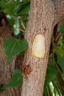
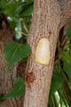

Common name : Tulip tree, portia tree, bhendi tree
Common name in Tamil : Puvarasam
Common name in Telugu : Gange ravi, ganga reni
Common name in Singhalese : Suriya
 

Diagnostic characters
Botany & morphology
Reproductive biology
Ecology
Distribution
Uses
Medium sized trees, up to 10m tall, young twigs covered with bronze-coloured lepidotes. Leaves cordate. Flowers yellow with red centre; fruit capsule.
Leaves simple, alternate, long petioled, ovate, apex acuminate, base cordate, 7 -nerved at base, 6 - 10 x 4 - 8 cm, entire, bronze-colored lepidote beneath.
Flowers solitary, large, bisexual, regular, yellow, long peduncled; calyx truncate; petals 5, free, convolute; stamens numerous on staminal tube; ovary 5 - celled, styles club – shaped and 5 - furrowed.
Fruits capsule, apically depressed, mucronate, glabrescent; seeds 2 - 4 per cell, ovoid.
Pollination by bees and insects. Fruit, which can float, is the primary organ of dispersal.
Occasional on roadsides and often planted in gardens. Associated with mangroves but always in dry, unexposed situations.
In tropics.
Ornamental trees for pretty flowers, wood used for building materials.
Top of the page